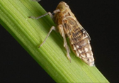

PESTS OF RICE :: Major Pests :: White Backed Plant Hopper
4. White backed plant hopper: Sogatella furcifera (Delphacidae: Hemiptera)
Distribution and status: India, Burma, Sri Lanka, China, Pakistan, Japan, Indonesia, Korea |
 |
Bionomics: In white nymphs, vertex characteristically gives a narrow face to the hoppers. Forewings hyaline with dark veins and a dark spot in the middle of posterior edge. Pronotum pale yellow and adults possess a diamond like marking on the thorax. The female lays upto 758 eggs in as many as 112 egg masses with 1-24 eggs in each in leaf sheath and in the mid rib of leaves. The ovipositional site characterized by black streaks. Egg period 6-7 days; nymphal period 12-17 days with five instars. The feamle longevity about 2 months.
Management
- Same as given for BPH.
- Use resistant varieties like AR 133, IC 25687, Tangner, Amelbero, HKR-10, HKR-126, IET 8116